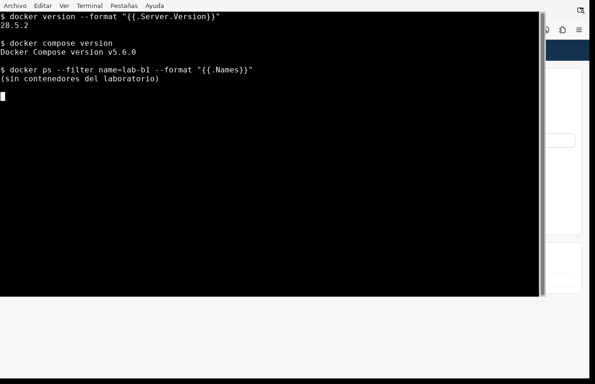
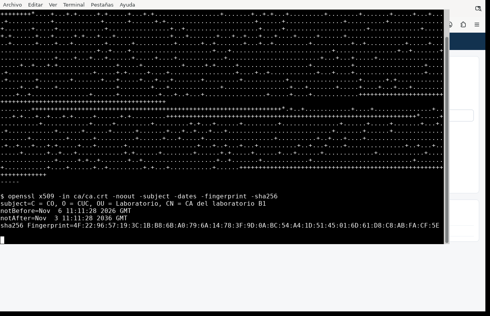
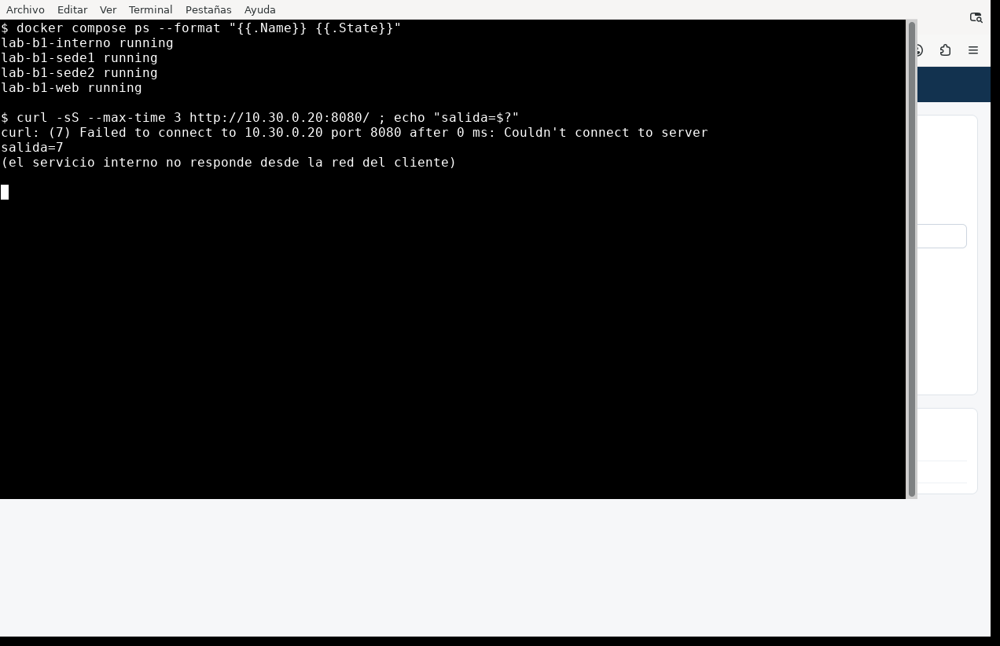

VirtualBox + OPNsense + Alpine Linux: tres zonas de servicio aisladas, una zona de administración con escritorio gráfico, NAT de salida, una aplicación web real con su base de datos protegida, y publicación controlada del servicio por NAT/PAT
👨🏫 Docente: Ing. Rodolfo Cañas Cervantes🏛️ Universidad de la Costa (CUC)📅 Unidad 2 · Actividad 1 (10%) · Corte 2 · 2027-1
Laboratorio B1 — Cifrado en tránsito: TLS y túnel entre dos sedes
Objetivo. Al terminar, dos contenedores de tu máquina se hablan por un canal TLS con una CA propia y,
además, un servicio interno solo responde a través de un túnel entre dos redes. Todo dentro de la VM.
Curso
Seguridad en Redes · Corte 2 · 10 % de la nota
Tiempo estimado
2 h 30 min (con la VM ya encendida)
Prerrequisitos
VM del curso arrancada, Docker y Docker Compose instalados, usuario con sudo, y el paquete del laboratorio en ~/labs/b1, que descarga asur-lab iniciar b1 Si el catálogo publicado no responde, el curso entrega una copia local del catálogo y de los paquetes: export ASUR_LAB_URL=file://$HOME/catalogo-2027-1. Ademas, el cliente asur-lab comprueba el catalogo al instalar: si hay una version nueva, se actualiza solo; con una copia local en file:// no puede actualizarse y lo avisa y se repite el mismo comando.
Entorno
Aislado: solo redes 10.20.0.0/24 y 172.16.0.0/24 dentro de la VM. Sin salidas a internet.
Paquete
El laboratorio se baja del catálogo de la plataforma con asur-lab iniciar b1. Si el cliente responde que el laboratorio todavía no está activo, su paquete se está publicando: no es un error del ejercicio.
Las capturas de esta guía se toman durante la prueba de la Fase 5. Cada paso indica qué debe mostrar la captura; si no ves eso, el paso no está hecho.
Parte A — TLS con CA propia en el laboratorio
A.1 Comprobar el entorno
Verifica que Docker responde y que no hay contenedores del laboratorio anteriores.
docker version --format "{{.Server.Version}}"
docker compose version
docker ps --filter name=lab-b1 --format "{{.Names}}"
Captura prevista para la prueba de la Fase 5: pantalla del paso «A.1 Comprobar el entorno» con la salida real. Se guarda en imagenes/B1-01.png.

Captura real del B1-01, tomada en la VM del curso.
Crea la carpeta de trabajo y entra en ella.
mkdir -p ~/labs/b1/web ~/labs/b1/wireguard/sede1 ~/labs/b1/wireguard/sede2 && cd ~/labs/b1
Salida esperada: una versión de Docker (por ejemplo 27.3.1), la versión de Compose y
la lista vacía de contenedores. Captura: la terminal con los tres comandos y la lista vacía.
A.2 Autoridad certificadora propia
Genera la clave y el certificado de la CA (10 años).
Captura prevista para la prueba de la Fase 5: pantalla del paso «A.2 Autoridad certificadora propia» con la salida real. Se guarda en imagenes/B1-02.png.

Captura real del B1-02, tomada en la VM del curso.
Salida esperada: subject=C = CO, O = CUC, OU = Laboratorio, CN = CA del laboratorio B1, una ventana de
validez de 10 años y una huella SHA256. Captura: el bloque con subject, dates y fingerprint.
A.3 Certificado del servidor con nombre alternativo
Crea la petición con el nombre que usará el cliente (web.lab) y una extensión SAN.
Salida esperada: X509v3 Subject Alternative Name: DNS:web.lab, IP Address:10.20.0.10 y servidor.crt: OK.
Captura: el SAN y el OK de la verificación.
Si openssl verify falla, no sigas: significa que el certificado no lo firmó tu CA o que el SAN no coincide con el nombre que vas a usar.
A.4 Servicio web con TLS moderno
El paquete ya trae docker-compose.yml con los servicios web, interno, sede1 y sede2, y el archivo web/nginx.conf con TLS 1.2 y 1.3. No los reescribas: si los cambias pierdes los servicios del túnel. Mira lo que trae con cat docker-compose.yml y cat web/nginx.conf.
Levanta el servicio y espera a que responda.
docker compose -p b1 up -d web interno
docker compose -p b1 ps
Pide la página por HTTPS confiando en tu CA y con el nombre del certificado.
Salida esperada: 200 0 (código HTTP 200 y resultado de verificación 0 = certificado válido).
Captura: el 200 0 y docker compose ps con el servicio arriba.
A.5 Que el canal sea el que crees
Negocia con el servidor y mira protocolo y cifrado.
Salida esperada: Protocol: TLSv1.3 (o TLSv1.2), un cifrado de la familia AEAD y
Verify return code: 0 (ok); el intento con TLS 1.1 termina con error y código distinto de cero; y el curl sin CA falla
con un mensaje de certificado no verificado. Captura: los tres comandos con sus salidas.
El tercer comando es el que demuestra que el cifrado sirve para algo: sin la CA, el cliente no acepta el canal. Si ese curl devuelve la página, el certificado no se está usando.
Parte B — Un servicio interno que solo responde por el túnel
B.1 Dos redes y un servicio que no se publica
El docker-compose.yml del paquete ya define el servicio interno, que vive en una segunda red y no publica ningun puerto. No lo reescribas: si lo haces, se pierden las sedes del tunel.
El cliente es el contenedor web, que vive en la red lan: desde ahi el servicio interno no responde, porque vive en otra red y no publica puertos.
Captura prevista para la prueba de la Fase 5: pantalla del paso «B.1 Dos redes y un servicio que no se publica» con la salida real. Se guarda en imagenes/B1-03.png.

Captura real del B1-03, tomada en la VM del curso.
Salida esperada: el wget falla (código distinto de cero) porque el servicio interno vive en otra red y no publica puertos.
Captura: el fallo y docker compose ps con los dos servicios.
B.2 Túnel entre las dos sedes
El paquete ya trae los servicios sede1 y sede2 con la imagen de WireGuard: sede1 está en la red lan (10.20.0.1) y sede2 tiene una pierna en la red interna (10.30.0.2) y hace la salida NAT. Tu trabajo es escribir el wg0.conf de cada sede.
Las utilidades de WireGuard no vienen en la VM: instálalas una vez con apt.
Genera un par de claves por sede y anota solo la pública.
sudo apt-get install -y wireguard-tools
umask 077
wg genkey | tee sede-a.key | wg pubkey > sede-a.pub
wg genkey | tee sede-b.key | wg pubkey > sede-b.pub
cat sede-a.pub sede-b.pub
Salida esperada: wg show con latest handshake de hace segundos y transfer distinto de cero, el ping entre las sedes con dos respuestas y la página del servicio interno servida por sede1 a través del túnel. Captura: el wg show completo, la respuesta del ping y la del servicio interno.
Las claves privadas del túnel son de este laboratorio. No las reutilices fuera de él ni las subas al repositorio; el entregable solo lleva las públicas y las capturas.
B.3 Qué demuestra el montaje
Situación
Resultado esperado
Por qué
Cliente de la red lan pide el servicio interno
Falla
No hay ruta: son redes distintas y no se publica el puerto
Sede a través del túnel pide el servicio interno
Responde
El túnel enruta 10.99.0.0/24 y la salida NAT de sede2 entrega el tráfico a la red interna
Cliente sin la CA pide https://web.lab
Falla
El certificado no se puede verificar
Cliente con TLS 1.1
Falla
El servidor solo acepta versiones actuales
Entregable y comprobación
Entrega un informe-b1.md con: la salida de openssl verify, el curl con 200 0, el s_client con protocolo y cifrado, el fallo con TLS 1.1, el fallo sin CA, el wg show con handshake, el ping entre las sedes por el túnel y la respuesta del servicio interno por el túnel. Cada bloque con el comando que lo produjo.
La comprobación automática asur-lab check b1-tls (desde el directorio del laboratorio: el verificador lee ca.crt y servidor.crt de donde se ejecuta) revisa que el certificado del servidor valide contra la CA del laboratorio, que el canal no acepte versiones antiguas, que el servicio interno no se alcance desde la red del cliente y que exista un handshake reciente en el túnel. No dice el valor esperado de ninguno de los cuatro: si algo falla, indica qué paso revisar.
Calificación. Los criterios y los pesos de esta actividad están por definir: los decide el docente. Esta guía fija qué se entrega y qué comprueba el verificador; no fija niveles ni porcentajes.
Errores frecuentes
Síntoma
Causa habitual
Qué revisar
curl: (60) SSL certificate problem
Se usó el certificado sin la CA o el nombre no coincide
--cacert con ca.crt y --resolve con el nombre del SAN
s_client conecta pero el cifrado es antiguo
El servidor no limita las versiones
La línea ssl_protocols y reiniciar el contenedor
El túnel no levanta
Claves cruzadas o direcciones repetidas
Que cada lado apunte a la pública del otro y que 10.99.0.1 y 10.99.0.2 no se repitan
El servicio interno responde desde el cliente
Se publicó un puerto o se unió a la red equivocada